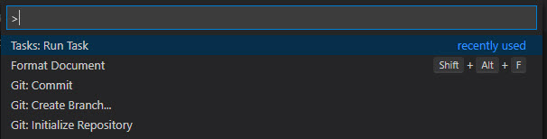
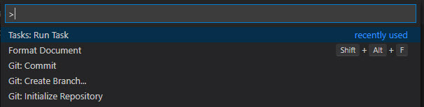

Tip
The docs as explained here are used in multiple projects, but documented only once for better maintenance. When applying this to other projects, remember that some things such as the name, repository, or paths are a bit different.
Build the Docs with Code
Tip
This expands on the initial Build Docs Only guide, to include the code.
So make sure that works, before you continue here.
Setup Everything
For the Code + Docs build the code must be in the correct location near the docs project. This is because the C# code is compiled and the XML-comments are extracted from the compiled code.
As this documentation-guide is for multiple projects, each one is explained separately.
Setup Code / Docs for the Solutions
Ensure that you have set up the complete 2sxc/EAV development environment. This environment should be configured and functional for the development of C# and JavaScript code.
➡️ For more information refer to the Code documentation.
Build and Test Locally
Depending on your preferred toolchain, you can use
- VS Code (recommended ⭐)
- Visual Studio 2022 (not recommended)
Building and previewing everything with VS Code is the recommended ⭐ way.
Open the
*.code-workspaceworkspace and build the same way as with the docs-only scenario......except that we want to run docfx: build.
In the output you should then see a bunch of stuff - ending with
Build SucceededIt is generated into the root
/docsfolder.
 



Test Locally
Recommended üåü: Use the Live Server extension to serve the
/docsfolder on http://localhost:5500` usingAlt + L, Alt + O.Alternative: Set up IIS to publish the
/docsfolder on a domain such asdocs.oqtane.me(not recommended as unnecessarily complex).